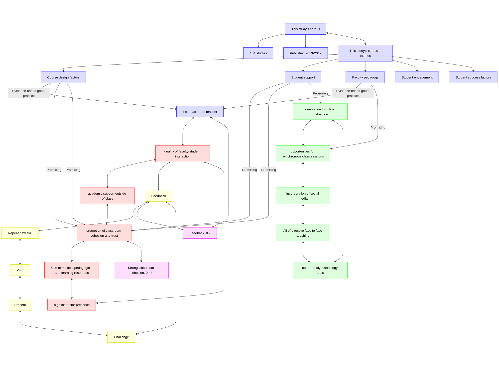

2024-09-18: Lockman & Schirmer, 2020¶
- Discussion leader: Richel
- Date: 2024-09-18
- Paper: Lockman, Alison S., and Barbara R. Schirmer. "Online instruction in higher education: Promising, research-based, and evidence-based practices." Journal of Education and e-Learning Research 7.2 (2020): 130-152. Download page
Meeting notes¶
- Feedback can be left anonymously
[link to Google Form]and will be published online publicly - The person leading the discussion determines how to do that, my ideas may not be representative (and that is fine :-) )
- The goal of this journal club is to become a better teacher
- The goal of this paper is to become a better teacher in online teaching
- Procedure
- Go through questions
- Any new discussion leader for next month, 16th October?
- If yes, please share today
- New paper will be announced Friday
- Go or stay to evaluate the format of this journal club
Questions¶
- What grade on a scale from 1 (worst) to 10 (best) would you give this paper?
- How would you praise the paper?
- How would you criticise the paper?
- How would you summarize the paper in one line?
- The paper reviews the literature from 2013-2019. Do you think it is still applicable, or is it outdated?
- Do you believe the main finding of the paper is true?
- Which finding do you think is most relevant for us becoming a better teacher?
- Do you happen to know disagreements with this paper and others?
- How would this paper make us a better teacher?
(putting in bigger context, as recommended by
[Deenadayalan et al., 2008])
Discussion notes¶

This study in context. Red nodes: effective teaching according to the literature, according to the author. Green nodes: effective online teaching according to the literature, according to the author. Red nodes: this study.
- Yellow: teaching cycle, from
[Bell, 2020].
Purple: influence with effect size, from The Visible Learning site, and
[Hattie, 2008]and[Hattie, 2023].
corpus:
- years 2013-2019
- 104 papers
corpus themes:
- course design factors
- Effective in improving achievement and satisfaction
- feedback from instructor
- incorporation of multiple pedagogies and learning resources
- feedback from peers
- user-friendly online tools
- high instructor presence
- promotion of socialization
- group cohesion
- trust
- face-to-face teaching (compared to online or hybrid)
- Less effective:
- groupwork
- online lectures
- Effective in improving achievement and satisfaction
- student support
- important to student achievement in online coursework:
- orientation to online instruction prior to beginning coursework
- quality of faculty-student interaction
- academic support for students
- establishment of trust
- a sense of community
- important to student achievement in online coursework:
- faculty pedagogy
- a positive relationship between the number of student posts and course learning
- social media facilitated student-to-student interaction
- synchronous environments encourages active learning
- synchronous environments requires greater student motivation
- synchronous environments requires greater proficiency with the technology
- faculty feedback is more important to students than peer feedback, and timeliness and usefulness are qualities of effective feedback.
- Given the student perception that feedback can feel threatening, findings from a few studies indicate that perception of instructor presence can mitigate these feelings and improve student motivation.
- metacognitive support improves student higher level thinking
- selection of learning partners in group activities is a factor in student success.
- mixed results whether the number and quality of instructor posts are related to student participation on discussion forums and course achievement
- mixed effectiveness from interventions designed to increase student participation in discussion forums – such as incorporation of orientation sessions, visual materials, and social media venues
- no significant correlations between viewing videos as preparation for in-class sessions and tests and learning outcomes
- social media does not facilitate academic learning
- viewing videos as preparation for in-class sessions and tests has no effect on course achievement
- students are inconsistent in accessing videos
- student engagement
- greater interaction with online course content is related to better course grades and satisfaction
- peer and instructor interaction are not consistently related to course satisfaction
- student success factors
- no correlations were found between student learning style and online course achievement
- personal self-efficacy and internet self-efficacy predict online academic achievement
- online course achievement is increased by past academic success, motivation, family support, workload management, and digital literacy
Effective face-to-face teaching:
- the use of multiple pedagogies and learning resources to address different student learning needs
- high instructor presence
- quality of faculty-student interaction
- academic support outside of class
- promotion of classroom cohesion
- trust
Effective online teaching:
- Same as effective face-to-face teaching
- user-friendly technology tools
- orientation to online instruction
- opportunities for synchronous class sessions
- incorporation of social media
Evidence-based effective:
- only faculty feedback
Evaluation¶
At 9:02, I closed the Zoom room, as there were zero people. I consider this to be a communication problem and I have updated the main page.
References¶
[Bell, 2020]Bell, Mike. The fundamentals of teaching: A five-step model to put the research evidence into practice. Routledge, 2020.[Deenadayalan et al., 2008]Deenadayalan, Yamini, et al. "How to run an effective journal club: a systematic review." Journal of evaluation in clinical practice 14.5 (2008): 898-911.[Hattie, 2008]Hattie, John. Visible learning: A synthesis of over 800 meta-analyses relating to achievement. Routledge, 2008.[Hattie, 2023]Hattie, John. Visible learning: The sequel: A synthesis of over 2,100 meta-analyses relating to achievement. Routledge, 2023.